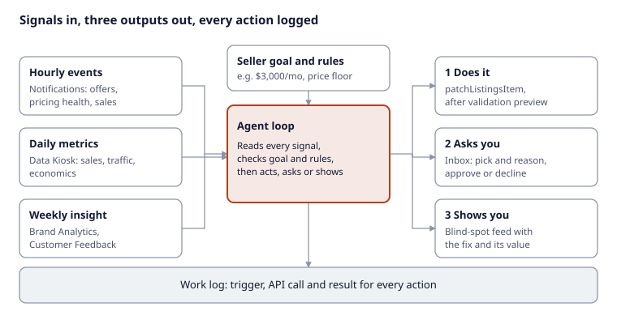

Summary
Amazon's Selling Partner API (SP-API) already lets an agent do most of what the agent-first partner experience promises. What's missing is the decision layer on top.
- It does the small things: fully possible. The Listings Items API and listing feeds can fix attributes, stock and prices. A validation preview lets the agent check a change before it goes live, and notifications tell it when something breaks.
- It flags what needs you: possible, but the judgment is ours to build. Product Pricing gives a Featured Offer Expected Price, and notifications report when an offer loses the Featured Offer. Amazon gives no price-elasticity score, so the agent works out sensitivity from its own price tests and sales data.
- It shows your blind spots: possible for brand owners. Brand Analytics and the Customer Feedback API rank search gaps and review problems, but only for sellers with a registered brand.
- It works toward a goal: possible. Hourly sales and traffic events plus daily Data Kiosk metrics let an agent track a revenue goal and see the profit behind it.
The main risks are monthly changes to attribute rules, a steady stream of version retirements, and seller distrust of AI that edits listings without asking. Appendix A lists every API with its history, what it scores and who acts on it.
How access works
A seller can connect an agent to its own account for free; building one agent for many sellers means registering as a developer and listing the app publicly. The Selling Partner API (SP-API) is a REST API over a seller's orders, listings, prices, inventory, payments and reports (overview).
| App type | Who authorizes it | Fits |
|---|---|---|
| Private seller app | The seller, for their own account (self-authorized). Needs a Professional selling account | One shop's own agent, a hackathon demo on a real account |
| Public seller app | Each seller, by OAuth. Must be listed in the Selling Partner Appstore | A product serving many partners |
| Private vendor app | The vendor's own organization | First-party vendors, not marketplace sellers |
Source: SP-API registration overview.
- Roles decide what the agent can touch. Access is granted per role, 19 in all. The ones this case needs: Product Listing, Pricing, Inventory and Order Tracking, Brand Analytics, Selling Partner Insights, Buyer Communication, Buyer Solicitation, Amazon Fulfillment, Finance and Accounting (roles).
- Restricted roles need more vetting. Roles that touch personal data, such as direct-to-consumer shipping and tax invoicing, ask for extra detail on data use and security controls.
- Sign-in is Login with Amazon (LWA) OAuth 2.0. Calls carry an access token; AWS request signing is no longer required (guide).
- No API fees today. Amazon announced a $1,400 yearly developer fee plus $0.40 per 1,000 read calls on November 3, 2025, then dropped both in May 2026. Sellers using the API for their own business were never charged (PPC Land).
- A sandbox exists. Many operations, such as Listings Items, return static sandbox responses for testing (Listings Items API).
Map of APIs by area
Ten API families cover nearly everything an agent-first experience needs; ads are the one area that sits outside SP-API, in a separate Amazon Ads API.
| Area | API | What an agent can read or do | Role needed |
|---|---|---|---|
| Listings | Listings Items + Product Type Definitions | Create, patch or delete a SKU: title, attributes, images, price, quantity. Read live issues per listing | Product Listing |
| Bulk listings | Feeds (JSON_LISTINGS_FEED) | The same changes in bulk; the old XML and flat-file feeds are retired | Product Listing |
| Catalog | Catalog Items | Read any ASIN: attributes, images, sales ranks, variations | Product Listing |
| Pricing | Product Pricing | Competitor offers, Featured Offer (Buy Box) winner, reference prices, the expected price to win the Featured Offer | Pricing |
| Events | Notifications | Push events: offer changes, pricing health, hourly sales, traffic and inventory, account status, order changes | Varies by event |
| Orders | Orders v2026-01-01 | Orders, items and tracking in one call; buyer details need a restricted role | Inventory and Order Tracking |
| Inventory | FBA Inventory, Fulfillment Inbound | Stock by location, inbound shipments, restock | Amazon Fulfillment |
| Analytics | Data Kiosk (GraphQL), Reports | Sales, traffic, conversion, Buy Box share, economics per ASIN, search, returns, account health | Brand Analytics, Selling Partner Insights |
| Customer voice | Customer Feedback | Top positive and negative review topics per ASIN; return topics per category | Brand Analytics |
| Buyers | Messaging, Solicitations | Message a buyer about an order; request one review and feedback per order | Buyer Communication, Buyer Solicitation |
| Ads (separate API) | Amazon Ads API | Sponsored Products campaigns, keywords, bids, budgets, reports | Separate app and sign-in |
The Ads API needs its own Login with Amazon app and credentials, separate from SP-API (guide).
Proposition 1: it does the small things
Every routine fix in the deck can be done by API today, and each write can be checked before it goes live. The key call is patchListingsItem, which changes only the attributes sent, such as price or quantity, and leaves title and images alone (Listings Items).
| Small job | What triggers it | API call | Built-in guardrail |
|---|---|---|---|
| Fill missing article attributes | A listing issue such as "attributes tagged as customer_returns are incomplete: color, item_dimensions, item_weight" | getListingsItem issues, then patchListingsItem | mode=VALIDATION_PREVIEW returns errors without saving (listing issues) |
| Draft attribute values with AI | A thin or new listing | putListingsItemSuggestions: AI-generated attribute suggestions | Suggestions, not writes; the agent or seller accepts them |
| Correct a price inside the seller's band | PRICING_HEALTH: offer lost Featured Offer eligibility | Product Pricing reference prices, then patchListingsItem | Preview flags pricing-policy violations (pricing workflows) |
| Keep stock counts right | A sale, a restock, FBA_INVENTORY_AVAILABILITY_CHANGES | Merge patch on fulfillment_availability.quantity | Only quantity changes |
| Fix listings in bulk | Many SKUs share one issue | JSON_LISTINGS_FEED | Same schema as single updates |
| Ask buyers for a review | Order delivered | createProductReviewAndSellerFeedbackSolicitation | One request per order (Solicitations) |
The issue tags matter for this case: Amazon labels missing attributes by why they matter, for example customer_returns, so an agent can explain each fix in the seller's terms (listings guide).
Proposition 2: it flags what needs you
Amazon gives an agent the market signals for price decisions in real time, but no ready-made price-sensitivity score: the agent computes sensitivity itself from price and sales history, then asks when the answer falls outside the seller's rules.
| Signal | API | What the agent asks the seller |
|---|---|---|
| A competitor in the top 20 offers changed price, or another retailer's price moved | ANY_OFFER_CHANGED notification (notifications) | "Match, hold, or let this one go?" |
| The offer lost Featured Offer eligibility on price | PRICING_HEALTH notification, with the Featured Offer price, 60-day average selling price and recent Amazon retail price | "Winning back the Buy Box means going under your floor. Approve?" |
| The price needed to win the Featured Offer | getFeaturedOfferExpectedPriceBatch, up to 40 SKUs per call (pricing FAQ) | "These 3 SKUs need a price below target to compete" |
| Who wins the Featured Offer, split by Prime and non-Prime shoppers | getCompetitiveSummary | "Your Prime offer wins, your non-Prime does not" |
| How units respond to price over time | Data Kiosk sales and traffic: average selling price, units, conversion, Featured Offer share (seller analytics) | "A 5% cut moved little last time; keep the margin?" |
The last row is where a hackathon team adds value: the price-sensitivity estimate is the team's model, built on Amazon's data. One change to note: getCompetitiveSummary stopped returning the competitive price threshold as a reference price on September 30, 2025 (deprecations).
Proposition 3: it shows your blind spots
The richest blind-spot data, from search, reviews and returns, is open only to brand owners: most of it needs Amazon Brand Registry and the Brand Analytics role (analytics reports).
| Blind spot | API or report | What it shows | Who can get it |
|---|---|---|---|
| Why customers return and complain | Customer Feedback API | Top 10 positive and negative review topics per ASIN, ranked by mentions and effect on star rating; return topics per category; 6-month trends | Brand Analytics role; US, UK, DE, FR, IT, ES, JP; English only; refreshed weekly (use case guide) |
| Searches where the product is seen but not bought | Search Query Performance report | Per query and ASIN: impressions, clicks, cart adds, purchases, query volume and a query score | Brand Registry, Brand Analytics |
| Demand the shop is missing | Amazon Search Terms report | Top search terms with the most-clicked ASINs, click share and conversion share | Brand Registry, Brand Analytics |
| What sells together, and who comes back | Market Basket and Repeat Purchase reports | Items bought together; repeat-purchase behaviour | Brand Registry, Brand Analytics |
| Listings drifting toward returns or suppression | Listing issues on getListingsItem | Missing attributes tagged by impact, such as customer returns | Product Listing |
| Account risk | Data Kiosk seller analytics; ACCOUNT_STATUS_CHANGED | Account health, defect and return metrics; status moves between normal, at risk and deactivated (notifications) | Selling Partner Insights |
The Customer Feedback API carries the same insights as Product Opportunity Explorer in Seller Central, so an agent can bring them to the seller instead of the seller going to look.
Goal and outcome: measuring progress
An agent can track a goal like "$3,000 a month by December" hour by hour: Amazon pushes hourly sales and traffic, and Data Kiosk gives the daily truth and the profit behind it.
| Question the agent answers | Source | Freshness |
|---|---|---|
| Are we on pace today? | ITEM_SALES_EVENT_CHANGE and DETAIL_PAGE_TRAFFIC_EVENT notifications, per ASIN | Hourly, with late data from up to 24 hours back (notifications) |
| Did the change work? | Data Kiosk seller analytics: sales, units, sessions, conversion, Featured Offer share, returns, by ASIN and date | Daily (seller analytics) |
| Is it profitable, not just bigger? | Data Kiosk Economics: sales, returns, ads, fees and net proceeds per product (Data Kiosk launch) | Daily |
| What money moved? | TRANSACTION_UPDATE notification, Finances API | On each transaction |
Data Kiosk is a GraphQL query layer; Amazon says reports in the older Reports API are retired once they move into it (Data Kiosk). Use the analytics_sellerAnalytics_2025_03_31 dataset; the earlier sales and traffic dataset was removed on March 27, 2026 (deprecations).
Limits and risks
The hard limits are about who can see the data, not what an agent can change: write access is broad, but search, review and return insight is for brand owners only.
- Brand Registry gate. Search Query Performance, Search Terms, Market Basket, Repeat Purchase and Customer Feedback all need the Brand Analytics role and a registered brand. A reseller without a brand gets none of them.
- No ready-made scores for the hard calls. We found no price-elasticity or listing-quality score in the API. The Seller Central Listing Quality dashboard shows a "potential sales lift" per missing attribute (eComEngine), but we did not find it exposed in the API docs we checked.
- Rate limits per operation. Each call has its own rate and burst; for example, Solicitations allows 1 request per second with a burst of 5. The live limit comes back in the
x-amzn-RateLimit-Limitheader (Solicitations reference). - History is short. Orders older than two years do not appear in the API in most stores (Orders API).
- Events arrive out of order and twice. Notification queues are standard Amazon SQS queues, so the agent must handle duplicates and any order (notifications).
- The rules move every month. Attribute requirements change per product type, for example on June 29, 2026 (changelog), and Orders v0 is removed on March 27, 2027.
- Trust is fragile. Sellers complain that Amazon's own AI attribute suggestions are applied unless rejected one by one (Seller Forums). An agent that shows its work and asks before risky changes answers that complaint directly.
- Pricing of the API itself can change. Developer fees were announced in 2025 and cancelled in May 2026.
For hackathon teams: a starter architecture
A one-day demo needs three signal feeds, one agent loop with the seller's goal and rules, and three outputs that match the propositions: it does, it asks, it shows.

Each output maps to a proposition; the work log under all of them is what lets a seller trust the agent.
Fastest path to a demo:
- Register a private seller app on a Professional seller account, or use the sandbox responses where no account is at hand.
- Start with read-only data: Data Kiosk for the goal, Product Pricing for price signals, listing issues for fixes.
- Add one write:
patchListingsItemwithmode=VALIDATION_PREVIEW, so nothing goes live in the demo. - Put a person in the loop on screen: the inbox shows each ask with the agent's pick and its reason.
- Log every action with its trigger, the API call and the result, so judges can check the work.
Appendix A: API by API
Each API with its current version, how it has changed, which proposition it serves, what it recommends or scores, and who acts on it. "Who acts" is a proposed split for this case, not an Amazon rule. Sources for every date: the SP-API deprecation schedule unless linked.
| API (current version) | How it evolved | Serves | Recommends or scores | Who acts |
|---|---|---|---|---|
| Listings Items v2021-08-01 | Replaced v2020-09-01. XML and flat-file feeds deprecated March 18, 2024 and removed by July 31, 2025 (reminder). Multi-store reads from July 29, 2026 (changelog). Added putListingsItemSuggestions for AI attribute suggestions (reference) | 1 | Issues with severity (error, warning) and impact tags such as customer_returns and relevant_attributes; AI-suggested attribute values | Agent alone for attributes and stock; agent within the price band |
| Product Type Definitions v2020-09-01 | Attribute requirements change monthly, latest June 29, 2026 | 1 | Required and conditional attributes per product type | Agent alone |
Feeds (JSON_LISTINGS_FEED) | The only bulk listing feed after legacy feeds were removed | 1 | Same issues as Listings Items, per SKU | Agent alone |
| Catalog Items v2022-04-01 | v0 getCatalogItem removed April 24, 2025; v0 listCatalogCategories removal in 2026 | 1, 3 | Sales ranks per category | Agent reads |
| Product Pricing v2022-05-01 | getCompetitiveSummary and getFeaturedOfferExpectedPriceBatch added; competitive price threshold dropped as a reference price September 30, 2025 | 2 | Featured Offer Expected Price; featured offer split by Prime, non-Prime and glance-view share | Agent inside the band; seller outside it |
| Notifications v1 | LISTINGS_ITEM_ISSUES_CHANGE payload 1.0 removed August 27, 2026; ORDER_STATUS_CHANGE removed July 29, 2026 (use ORDER_CHANGE) | 1, 2, 3 | Pricing health (Featured Offer ineligible); account status: normal, at risk, deactivated | Triggers the agent |
| Orders v2026-01-01 | New in 2026: one call per order, tracking for seller-fulfilled orders, no separate token for buyer data. v0 removed March 27, 2027 | Goal | None | Agent reads |
| Data Kiosk (GraphQL) | Reports move here and are then retired. analytics_salesAndTraffic_2023_11_15 removed March 27, 2026; use analytics_sellerAnalytics_2025_03_31 | Goal, 2, 3 | Featured Offer share, conversion rate, return rate, account health and defect metrics | Agent reads |
| Reports: Brand Analytics | Search Query Performance and Search Catalog Performance added February 26, 2025 (changelog); v2 settlement reports removed November 11, 2026 | 3 | Search query score and volume; search frequency rank; click share and conversion share | Agent finds; seller decides product moves |
| Customer Feedback v2024-06-01 | New in 2024; weekly refresh, English only | 3 | Review and return topics ranked by mentions and effect on star rating | Agent finds; seller decides product fixes |
| Solicitations v1 | Stable; one solicitation per order | 1 | None | Agent alone |
| Finances v2024-06-19 | v0 listFinancialEvents deprecated July 21, 2025, removed August 27, 2027 | Goal | None | Agent reads |
| Amazon Ads API (separate) | Own app registration and sign-in | 2 | Bid, keyword and budget recommendations (Adspirer) | Agent inside a budget; seller for budget increases |
Where Amazon already scores something
| Score | API | What the agent does with it |
|---|---|---|
| Featured Offer Expected Price | Product Pricing | Price target per SKU; ask if it is below the floor |
Featured Offer share (featureOfferPct) | Data Kiosk | Daily check that pricing works |
| Search query score, search frequency rank, click and conversion share | Brand Analytics reports | Rank search gaps to fix in listings |
| Topic effect on star rating | Customer Feedback | Rank product problems by damage |
| Issue severity and impact tags | Listings Items | Order the fix list; explain each fix |
| Account status | Notifications | Escalate at once on "at risk" |
Sources
All checked November 15, 2026.
- SP-API deprecation schedule
- Listings Items API and putListingsItemSuggestions
- Listing attribute and enumeration updates, June 2026
- Listings Items multi-store support, July 2026
- Deprecation reminders, June 2025
- Product Pricing FAQ
- Set up notifications with Amazon SQS
- Orders API v2026-01-01 announcement and Orders API
- Data Kiosk, Data Kiosk launch and seller analytics dataset guide
- Brand Analytics report types and Search Query Performance launch
- Customer Feedback API
- Solicitations API and reference
- Amazon Ads API and Adspirer on Amazon Ads recommendations
- eComEngine on the Listing Quality dashboard
- Seller Forums thread on AI attribute suggestions